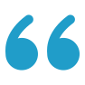

Среди всех офтальмологических заболеваний глаукома считается одним из самых опасных. В нашей поликлинике
на учете стоят несколько тысяч пациентов, страдающих этим заболеванием и тех, кто входит в группу риска.
О том, что такое глаукома, и о мерах ее профилактики рассказывает зав. отделением офтальмологииНаталья.
Плотко:

– Эта патология приводит к разрушению клеток сетчатой оболочки глаза, атрофии зрительного нерва и
безвозвратной утрате зрения. Профилактика глаукомы позволяет свести к минимуму негативные факторы,
способствующие развитию заболевания, и надолго сохранить хорошее зрение.
Пример 1
Среди всех офтальмологических заболеваний глаукома считается одним из самых опасных.
Пример 2
Среди всех офтальмологических заболеваний глаукома считается одним из самых опасных.
Пример 3
Среди всех офтальмологических заболеваний глаукома считается одним из самых опасных.
Заболевание связано с устойчивым или периодическим повышением внутриглазного давления (ВГД). В
результате в тканях глаза ухудшается кровообращение, нервные волокна сдавливаются и перестают нормально
функционировать.
Вот почему людям среднего возраста и старше ежегодно нужно проходить профилактический медицинский осмотр
у офтальмолога, серьезно относиться к здоровью глаз и следовать несложным советам в целях предупреждения
глаукомы.
– Эта патология приводит к разрушению клеток сетчатой оболочки глаза, атрофии зрительного нерва и
безвозвратной утрате зрения. Профилактика глаукомы позволяет свести к минимуму негативные факторы,
способствующие развитию заболевания, и надолго сохранить хорошее зрение.